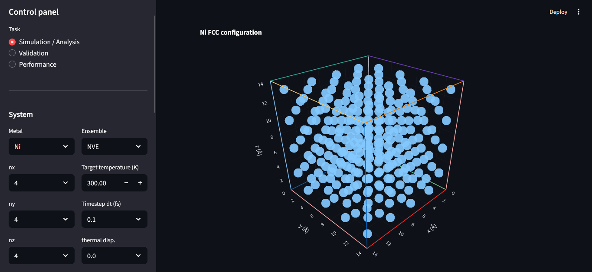
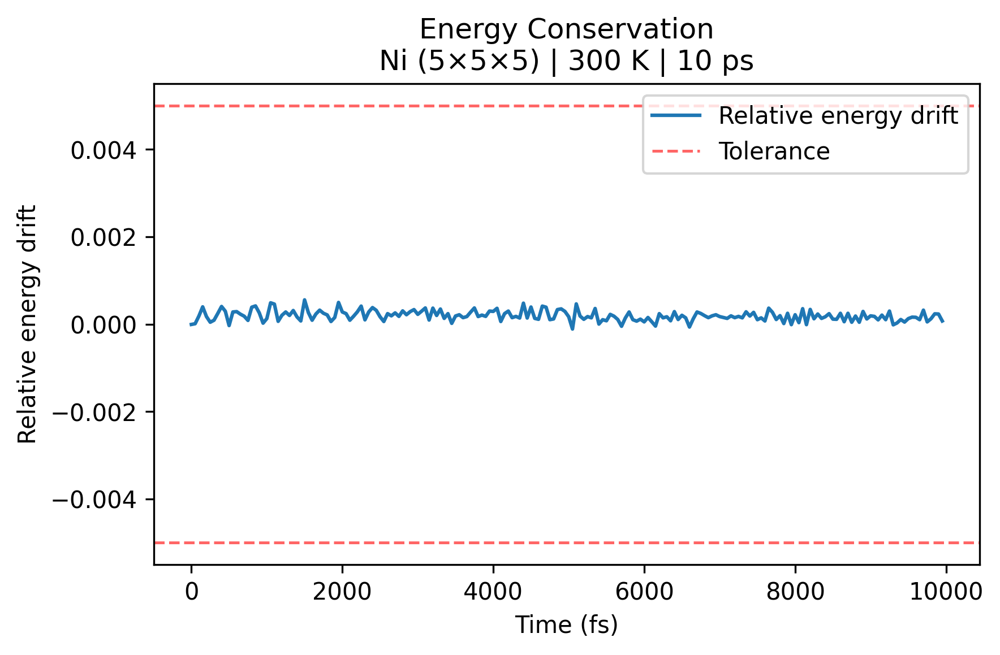
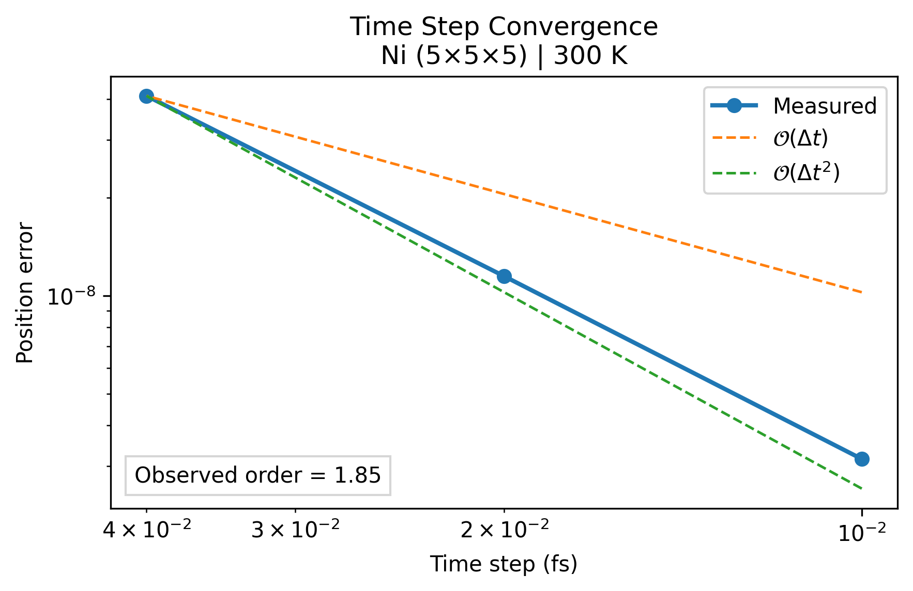
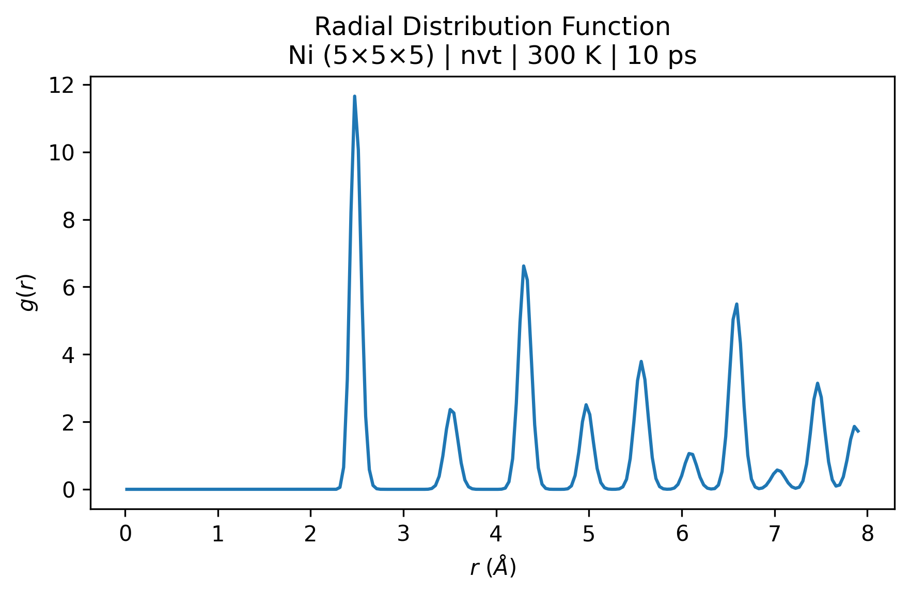
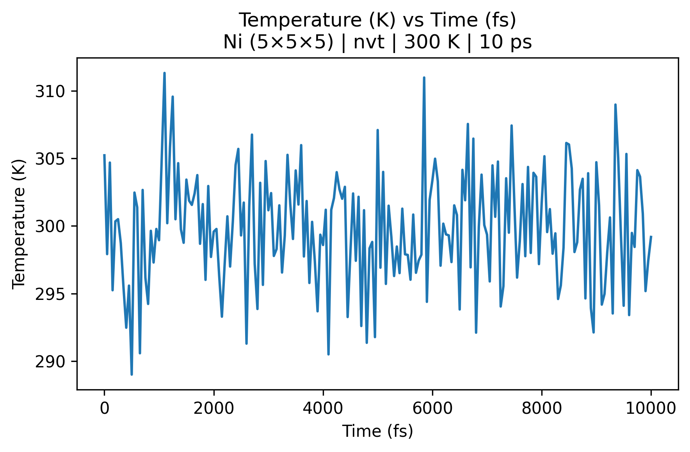
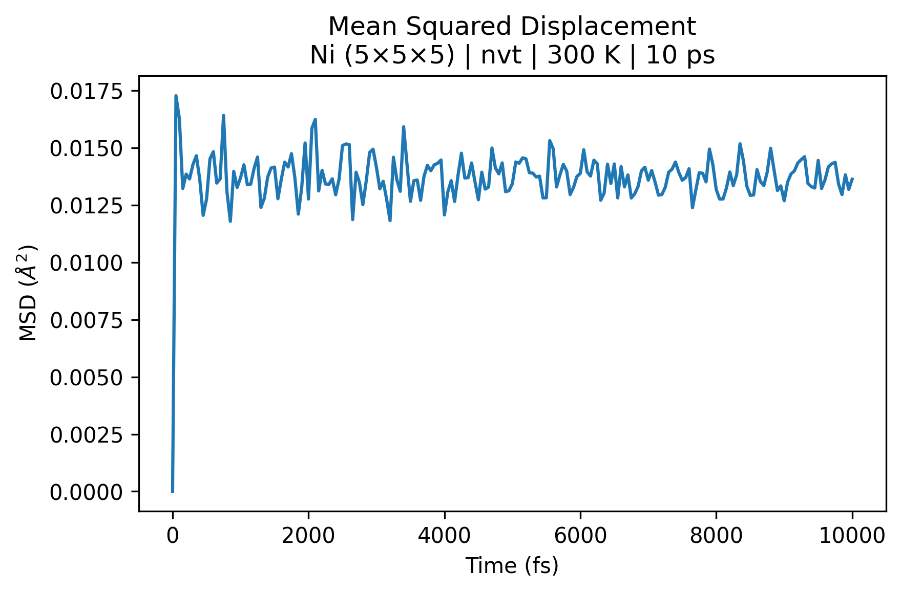
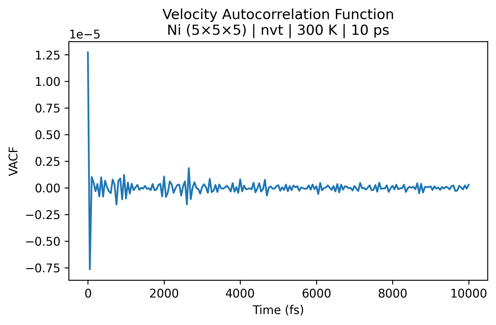
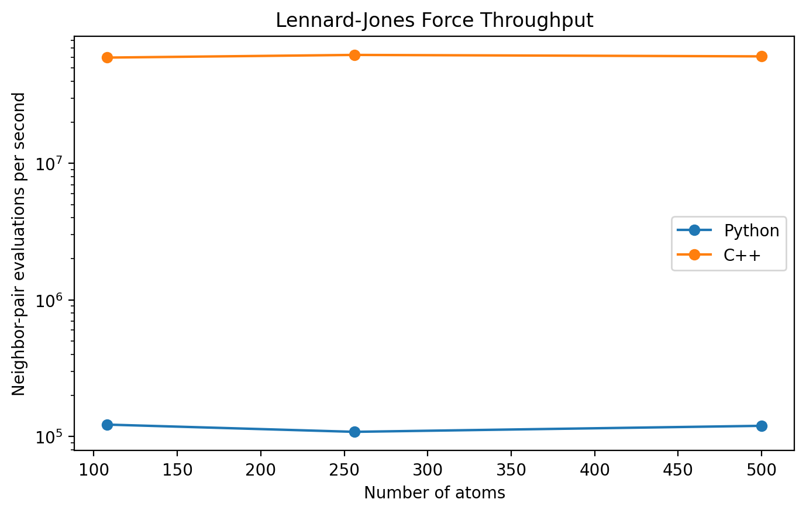
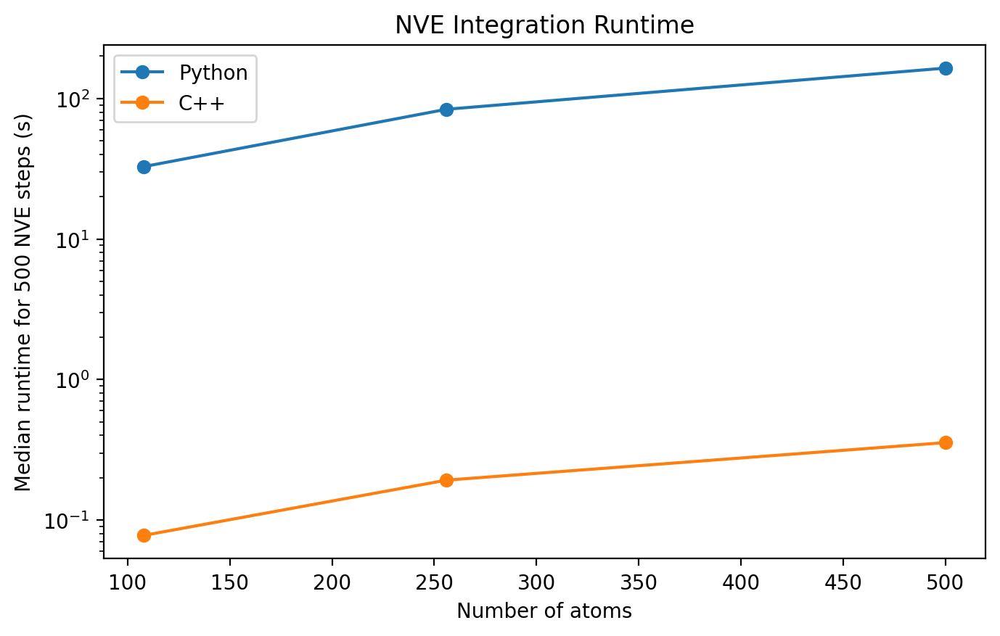

A molecular dynamics simulator built in Python and C++ to explore numerical methods in atomistic simulation and scientific software development.
I independently developed this project in order to connect the continuum modeling and numerical simulation in my liquid crystals research with modeling and simulation at the atomistic scale. I also wanted experience building scientific simulation software. This simulator initializes a chosen face-centered cubic crystal lattice, evolves particle trajectories using Lennard-Jones pair potentials and Newton's laws of motion, and computes structural, thermodynamic, and dynamical properties of the material. I implemented the core simulation algorithms, analysis routines, automated reports and plots, and a Streamlit web interface. I then accelerated the computational kernels using C++ and pybind11.

Particle trajectories are evolved using the velocity Verlet algorithm with periodic boundary conditions and the minimum-image convention. Pair interactions are modeled using a 12-6 Lennard-Jones potential, while Verlet neighbor lists reduce the cost of identifying interacting particle pairs.
The original implementation was written in Python. I subsequently rewrote the computationally expensive force, integration, and neighbor-list kernels in C++ and exposed them to Python using pybind11. This preserves the Python analysis and visualization workflow while moving the performance-critical numerical kernels to compiled code.
I developed an automated validation suite to test both the numerical implementation and the expected physical behavior of the simulator. Tests include:


Post-processing tools compute structural, thermodynamic, and dynamical properties from particle trajectories, including the radial distribution function, structure factor, mean squared displacement, velocity autocorrelation function, coordination number, pressure, heat capacity, and diffusion coefficients.




To explore performance-oriented scientific computing, I implemented a second simulation backend in C++ and connected it to Python using pybind11. The force evaluation, neighbor-list, and integration kernels were moved to compiled code while preserving the Python-based analysis and visualization workflow.
Benchmarking showed large improvements in both kernel throughput and end-to-end simulation runtime compared with the original non-vectorized Python implementation.


Python · C++ · NumPy · pybind11 · pytest · Matplotlib · Streamlit